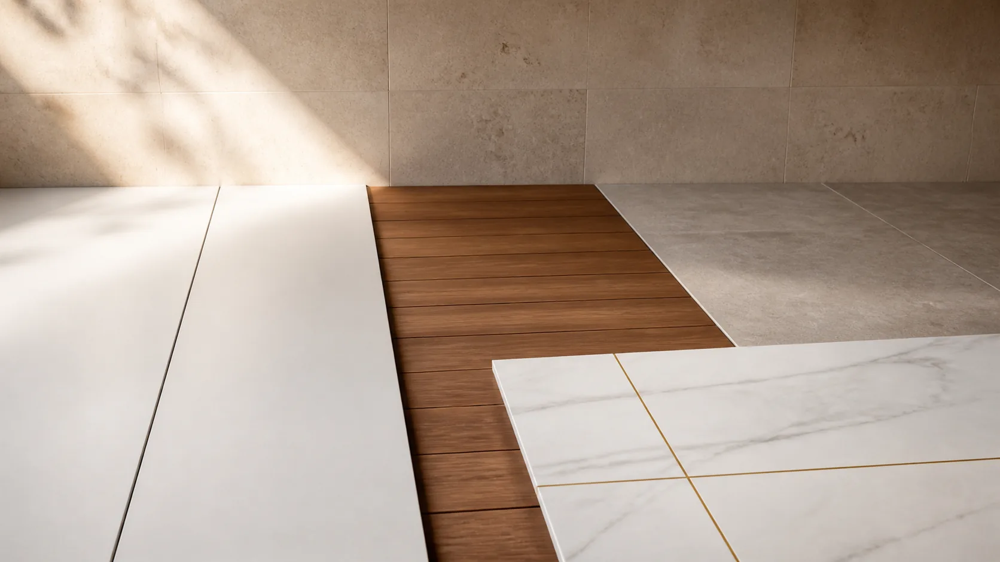

What is a golden sample for a wall panel order?
A photo approved in a chat cannot reliably settle a later argument about groove depth, gloss or packaging. A golden sample is the labelled physical reference against which production is compared. It is most useful when the buyer and supplier agree exactly which characteristics it controls and which measurements still come from the written specification.

Approve and label a physical sample from the exact intended construction before mass production. Keep matching copies with buyer, supplier and inspector, and connect them to the purchase order, drawing and test evidence.
Define what the sample controls
Record SKU, formulation or core description, profile drawing, length, effective width, thickness, face film, embossing, color, gloss and matching trim. A small swatch may show color but not a full-length seam or profile; request a larger assembly where joint fit matters. Specify viewing light and allowable color variation rather than relying on a screen image.
Link sample to production records
Sign or digitally record the sample ID, approval date, parties and any exceptions. Put the same ID on the purchase order and pre-shipment inspection sheet. If a factory changes face film, core or coating, require a new approval even when the commercial name stays the same. The buyer should keep one protected reference out of sun and cleaning exposure.
Inspect against more than appearance
At pre-shipment, compare production panels with the golden sample and written tolerances. Check connection fit, surface defects, dimensions, carton count, labeling and accessory match. A quality-management system such as ISO 9001 can support controlled processes but does not by itself prove this batch meets a particular product specification. Record measured deviations and disposition before loading.
Illustrative buyer situation
A distributor approves a warm oak wall panel by phone photo. Three months later, the production batch looks cooler under showroom lighting and the groove depth differs from the original swatch. A labelled golden sample and signed drawing would have made the disagreement measurable. For the next order, the buyer can keep duplicate physical references, record the approved film and profile code, and ask the inspector to compare production panels before the container is sealed.
Buyer checklist before ordering
- Signed sample ID and full specification
- Representative full-profile and trim assembly
- Buyer, supplier and inspector reference copies
- Change-control and pre-shipment comparison
Save the approved sample, product code and document references with the purchase order. A catalog helps shortlist a finish but does not establish the final specification, local acceptance, price or delivery terms.
Common buyer questions
Is a catalog swatch enough?
Not for many orders. A larger physical sample may be needed to approve seam, profile and finish together.
Does ISO 9001 certify the panel itself?
No. It addresses quality-management systems, not a specific panel performance claim.
What if production differs from the sample?
Record the deviation and seek buyer approval or corrective action before shipment.
Compare the range and request the exact specification
Browse the relevant product catalog (PDF, English), then tell Luvie the destination market, room or project use, approximate quantity and the finish you want to sample. We can discuss which current SKU and documents are available; do not assume a catalog image establishes certification or a guaranteed lead time.
Turn the question into a verifiable product brief.
Send the application and target market so the conversation starts with a specific product, sample and evidence request.
Ask Luvie about this use